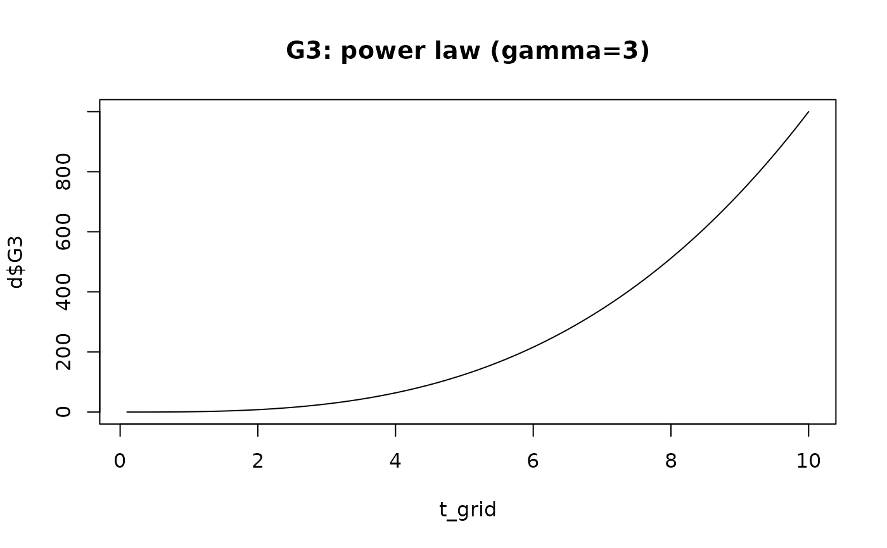

Computes the cumulative intensity \(G_3(t)\) and its derivative
\(g_3(t) = dG_3/dt\) for the late-phase parametric family used in the
original Blackstone C/SAS HAZARD code. Unlike hzr_decompos() (which
computes the early-phase G1 – a bounded CDF), this function can produce
unbounded values, making it suitable for modelling increasing late risk.
Value
A named list with two numeric vectors, each the same length
as time:
- G3
Cumulative intensity \(G_3(t) \ge 0\) (may exceed 1).
- g3
Derivative \(g_3(t) = dG_3/dt \ge 0\).
Mathematical form
When \(\alpha > 0\): $$G_3(t) = \bigl(\bigl((t/\tau)^\gamma + 1\bigr)^{1/\alpha} - 1\bigr)^\eta$$
When \(\alpha = 0\) (limiting exponential case): $$G_3(t) = \bigl(\exp\bigl((t/\tau)^\gamma\bigr) - 1\bigr)^\eta$$
Parameter mapping from SAS/C HAZARD
| SAS name | R argument | Role |
| TAU | tau | Scale (time at which \((t/\tau) = 1\)) |
| GAMMA | gamma | Power exponent on \(t/\tau\) |
| ALPHA | alpha | Shape (0 = exponential limiting case) |
| ETA | eta | Outer power exponent |
References
Blackstone EH, Naftel DC, Turner ME Jr. The decomposition of time-varying hazard into phases, each incorporating a separate stream of concomitant information. J Am Stat Assoc. 1986;81(395):615–624. doi:10.1080/01621459.1986.10478314
See also
hzr_decompos() for the early-phase (G1) decomposition,
hzr_phase_cumhaz() for phase-level cumulative hazard helpers.
Examples
t_grid <- seq(0.1, 10, by = 0.1)
# Weibull-like: alpha = 1 gives G3(t) = (t/tau)^(gamma*eta)
d <- hzr_decompos_g3(t_grid, tau = 1, gamma = 3, alpha = 1, eta = 1)
plot(t_grid, d$G3, type = "l", main = "G3: power law (gamma=3)")

# General case with alpha > 0
d2 <- hzr_decompos_g3(t_grid, tau = 2, gamma = 2, alpha = 0.5, eta = 1)